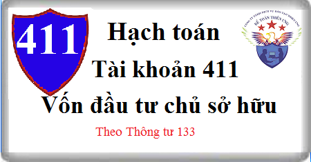

Hướng dẫn cách hạch toán Tài khoản 411 theo thông tư 133, cách hạch toán Vốn đầu tư của chủ sở, hạch toán khi nhận góp vốn điều lệ, tăng vốn điệu lệ, hoàn trả lại vốn góp chủ sở hữu.
1. Nguyên tắc kế toán Tài khoản 411 - Vốn đầu tư của chủ sở hữu
a) Tài khoản này dùng để phản ánh vốn do chủ sở hữu đầu tư hiện có và tình hình tăng, giảm vốn đầu tư của chủ sở hữu.
b) Vốn đầu tư của chủ sở hữu bao gồm:
- Vốn góp ban đầu, góp bổ sung của các chủ sở hữu;
- Thặng dư vốn cổ phần;
- Vốn khác.
c) Các doanh nghiệp chỉ hạch toán vào TK 4111 - “Vốn góp của chủ sở hữu” theo số vốn thực tế chủ sở hữu đã góp, không được ghi nhận theo số cam kết, số phải thu của các chủ sở hữu.
d) Doanh nghiệp phải tổ chức hạch toán chi tiết vốn đầu tư của chủ sở hữu theo từng nguồn hình thành vốn (như vốn góp của chủ sở hữu, thặng dư vốn cổ phần, vốn khác) và theo dõi chi tiết cho từng tổ chức, từng cá nhân tham gia góp vốn.
đ) Doanh nghiệp ghi giảm vốn đầu tư của chủ sở hữu khi:
- Trả lại vốn cho các chủ sở hữu, hủy bỏ cổ phiếu quỹ theo quy định của pháp luật;
- Giải thể, chấm dứt hoạt động theo quy định của pháp luật;
- Các trường hợp khác theo quy định của pháp luật.
e) Xác định phần vốn góp của nhà đầu tư bằng ngoại tệ
- Khi giấy phép đầu tư quy định vốn điều lệ của doanh nghiệp được xác định bằng ngoại tệ tương đương với một số lượng tiền Việt Nam đồng, việc xác định phần vốn góp của nhà đầu tư bằng ngoại tệ (thừa, thiếu, đủ so với vốn điều lệ) được căn cứ vào số lượng ngoại tệ đã thực góp, không xem xét đến việc quy đổi ngoại tệ ra Việt Nam đồng theo giấy phép đầu tư.
- Trường hợp doanh nghiệp ghi sổ kế toán, lập và trình bày báo cáo tài chính bằng đơn vị tiền tệ kế toán, khi nhà đầu tư góp vốn bằng ngoại tệ theo tiến độ, kế toán phải áp dụng tỷ giá giao dịch thực tế tại từng thời điểm thực góp để quy đổi ra đơn vị tiền tệ kế toán và ghi nhận vào vốn đầu tư của chủ sở hữu, thặng dư vốn cổ phần (nếu có).
- Trong quá trình hoạt động, không được đánh giá lại số dư có Tài khoản 411 - Vốn đầu tư của chủ sở hữu có gốc ngoại tệ.
g) Trường hợp nhận vốn góp bằng tài sản phải phản ánh tăng vốn đầu tư của chủ sở hữu theo giá đánh giá lại của tài sản được các bên góp vốn chấp nhận.
h) Đối với công ty cổ phần, vốn góp cổ phần của các cổ đông được ghi theo giá thực tế phát hành cổ phiếu, nhưng được phản ánh chi tiết theo hai chỉ tiêu riêng: Vốn góp của chủ sở hữu và thặng dư vốn cổ phần:
- Vốn góp của chủ sở hữu được phản ánh theo mệnh giá của cổ phiếu;
- Thặng dư vốn cổ phần phản ánh khoản chênh lệch giữa mệnh giá và giá phát hành cổ phiếu (kể cả các trường hợp tái phát hành cổ phiếu quỹ) và có thể là thặng dư dương (nếu giá phát hành cao hơn mệnh giá) hoặc thặng dư âm (nếu giá phát hành thấp hơn mệnh giá).
2. Kết cấu và nội dung Tài khoản 411 - Vốn đầu tư của chủ sở hữu
Bên Nợ: Vốn đầu tư của chủ sở hữu giảm do:
- Hoàn trả vốn góp cho các chủ sở hữu vốn;
- Phát hành cổ phiếu thấp hơn mệnh giá;
- Giải thể, chấm dứt hoạt động doanh nghiệp;
- Bù lỗ kinh doanh theo quyết định của cấp có thẩm quyền;
- Hủy bỏ cổ phiếu quỹ (đối với công ty cổ phần).
Bên Có: Vốn đầu tư của chủ sở hữu tăng do:
- Các chủ sở hữu góp vốn;
- Bổ sung vốn từ lợi nhuận kinh doanh, từ các quỹ thuộc vốn chủ sở hữu;
- Phát hành cổ phiếu cao hơn mệnh giá;
- Giá trị quà tặng, biếu, tài trợ (sau khi trừ các khoản thuế phải nộp) được phép ghi tăng Vốn đầu tư của chủ sở hữu theo quyết định của cấp có thẩm quyền.
Số dư bên Có: Vốn đầu tư của chủ sở hữu hiện có của doanh nghiệp.
Tài khoản 411 - Vốn đầu tư của chủ sở hữu, có 3 tài khoản cấp 2:
- TK 4111 - Vốn góp của chủ sở hữu: Tài khoản này phản ánh khoản vốn thực đã đầu tư của chủ sở hữu theo Điều lệ công ty của các chủ sở hữu vốn. Đối với các công ty cổ phần thì vốn góp từ phát hành cổ phiếu được ghi vào tài khoản này theo mệnh giá. Tài khoản 4111 - Vốn góp của chủ sở hữu tại công ty cổ phần có thể theo dõi chi tiết thành cổ phiếu phổ thông có quyền biểu quyết và cổ phiếu ưu đãi.
- TK 4112 - Thặng dư vốn cổ phần: Tài khoản này phản ánh phần chênh lệch giữa giá phát hành và mệnh giá cổ phiếu; Chênh lệch giữa giá mua lại cổ phiếu quỹ và giá tái phát hành cổ phiếu quỹ (đối với các công ty cổ phần). Tài khoản này có thể có số dư Có hoặc số dư Nợ.
- TK 4118 - Vốn khác: Tài khoản này phản ánh số vốn kinh doanh được hình thành do bổ sung từ kết quả hoạt động kinh doanh hoặc do được tặng, biếu, tài trợ, đánh giá lại tài sản (nếu các khoản này được phép ghi tăng, giảm vốn đầu tư của chủ sở hữu).
3. Cách hạch toán Vốn đầu tư của chủ sở hữu Tài khoản 411:
3.1. Khi thực nhận vốn góp của các chủ sở hữu, ghi:
Nợ các Tài khoản 111, 112 (nếu nhận vốn góp bằng tiền)
Nợ các Tài khoản 121, 128, 228 (nếu nhận vốn góp bằng cổ phiếu, trái phiếu, các khoản đầu tư vào doanh nghiệp khác)
Nợ các Tài khoản 152, 155, 156 (nếu nhận vốn góp bằng hàng tồn kho)
Nợ các Tài khoản 211, 217, 241 (nếu nhận vốn góp bằng TSCĐ, BĐSĐT)
Nợ các Tài khoản 331, 338, 341 (nếu chuyển vay, nợ phải trả thành vốn góp)
Nợ các TK 4112, 4118 (chênh lệch giữa giá trị tài sản, nợ phải trả được chuyển thành vốn nhỏ hơn giá trị phần vốn được tính là vốn góp của chủ sở hữu).
Có TK 4111- Vốn góp của chủ sở hữu
Có các TK 4112, 4118 (chênh lệch giữa giá trị tài sản, nợ phải trả được chuyển thành vốn lớn hơn giá trị phần vốn được tính là vốn góp của chủ sở hữu).
3.2. Trường hợp công ty cổ phần phát hành cổ phiếu huy động vốn từ các cổ đông
a) Khi nhận được tiền mua cổ phiếu của các cổ đông với giá phát hành theo mệnh giá cổ phiếu, ghi:
Nợ các TK 111, 112 (mệnh giá)
Có TK 4111 - Vốn góp của chủ sở hữu (mệnh giá).
b) Khi nhận được tiền mua cổ phiếu của các cổ đông có chênh lệch giữa giá phát hành và mệnh giá cổ phiếu, ghi:
Nợ các TK 111,112 (giá phát hành)
Nợ TK 4112 - Thặng dư vốn cổ phần (giá phát hành nhỏ hơn mệnh giá)
Có TK 4111 - Vốn góp của chủ sở hữu (mệnh giá)
Có TK 4112 - Thặng dư vốn cổ phần (giá phát hành lớn hơn mệnh giá)
c) Các chi phí trực tiếp liên quan đến việc phát hành cổ phiếu, ghi:
Nợ TK 4112 - Thặng dư vốn cổ phần
Có các TK 111, 112.
3.3. Trường hợp công ty cổ phần phát hành cổ phiếu từ các nguồn thuộc vốn chủ sở hữu:
a) Trường hợp công ty cổ phần được phát hành thêm cổ phiếu từ nguồn thặng dư vốn cổ phần, kế toán căn cứ vào hồ sơ, chứng từ kế toán liên quan, ghi:
Nợ TK 4112 - Thặng dư vốn cổ phần
Có TK 4111 - Vốn góp của chủ sở hữu.
b) Trường hợp công ty cổ phần được phát hành thêm cổ phiếu từ nguồn lợi nhuận sau thuế chưa phân phối (trả cổ tức bằng cổ phiếu) ghi:
Nợ TK 421- Lợi nhuận sau thuế chưa phân phối
Nợ TK 4112 – Thặng dư vốn cổ phần (nếu có)
Có TK 4111 - Vốn góp của chủ sở hữu
Có TK 4112 - Thặng dư vốn cổ phần (nếu có).
3.4. Trường hợp công ty cổ phần phát hành cổ phiếu để đầu tư vào doanh nghiệp khác:
a) Nếu giá phát hành cổ phiếu lớn hơn mệnh giá, ghi:
Nợ TK 228 - Đầu tư góp vốn vào đơn vị khác.
Có TK 4111 - Vốn góp của chủ sở hữu;
Có TK 4112 - Thặng dư vốn cổ phần (nếu có).
b) Nếu giá phát hành cổ phiếu nhỏ hơn mệnh giá, ghi:
Nợ TK 228 - Đầu tư góp vốn vào đơn vị khác.
Nợ TK 4112 - Thặng dư vốn cổ phần (nếu có)
Có TK 4111 - Vốn góp của chủ sở hữu.
3.5. Trường hợp công ty cổ phần được phát hành cổ phiếu thưởng từ quỹ khen thưởng để tăng vốn đầu tư của chủ sở hữu, ghi:
Nợ TK 3531 Quỹ khen thưởng
Nợ TK 4112 - Thặng dư vốn cổ phần (giá phát hành thấp hơn mệnh giá)
Có TK 4111 - Vốn góp của chủ sở hữu
Có TK 4112 - Thặng dư vốn cổ phần (giá phát hành > mệnh giá).
3.6. Kế toán cổ phiếu quỹ
a) Khi mua cổ phiếu quỹ, kế toán phản ánh theo giá thực tế mua, ghi:
Nợ TK 419 Cổ phiếu quỹ
Có các TK 111, 112.
b) Khi tái phát hành cổ phiếu quỹ, ghi:
Nợ các TK 111,112 (giá tái phát hành)
Nợ TK 4112 - Thặng dư vốn cổ phần (giá tái phát hành nhỏ hơn giá ghi sổ)
Có TK 419 - Cổ phiếu quỹ (theo giá ghi sổ)
Có TK 4112 - Thặng dư vốn cổ phần (giá tái phát hành lớn hơn giá ghi sổ cổ phiếu quỹ).
c) Khi công ty cổ phần huỷ bỏ cổ phiếu quỹ:
Nợ TK 4111 - Vốn góp của chủ sở hữu (theo mệnh giá)
Nợ TK 4112 - Thặng dư vốn cổ phần (giá mua lại lớn hơn mệnh giá)
Có TK 419 - Cổ phiếu quỹ (theo giá ghi sổ)
Có TK 4112 - Thặng dư vốn cổ phần (giá mua lại nhỏ hơn mệnh giá).
3.7. Khi doanh nghiệp bổ sung vốn điều lệ từ các nguồn vốn hợp pháp khác, doanh nghiệp phải kết chuyển sang Vốn đầu tư của chủ sở hữu, ghi:
Nợ các TK 418 Các quỹ thuộc vốn chủ sở hữu
Nợ TK 421 - Lợi nhuận sua thuế chưa phân phối
Có TK 411 - Vốn đầu tư của chủ sở hữu (4111).
3.8. Khi nhận được quà biếu, tặng, tài trợ, ghi:
Nợ các TK 111,112,153, 211...
Có TK 711 - Thu nhập khác.
Sau khi thực hiện nghĩa vụ thuế đối với Nhà nước, nếu phần còn lại được phép ghi tăng vốn góp của chủ sở hữu, ghi:
Nợ TK 421 – Lợi nhuận chưa phân phối.
Có TK 411 - Vốn đầu tư của chủ sở hữu (4118).
3.9. Khi hoàn trả vốn góp cho các chủ sở hữu, ghi:
Nợ TK 411- Vốn đầu tư của chủ sở hữu (4111, 4112)
Có các TK 111,112.
3.10. Khi trả lại vốn góp cho chủ sở hữu, ghi:
- Trả lại vốn góp bằng tiền, hàng tồn kho, ghi:
Nợ TK 4111 - Vốn góp của chủ sở hữu
Có các TK 111, 112,152, 155, 156... (giá trị ghi sổ).
- Trả lại vốn góp bằng TSCĐ, ghi:
Nợ TK 411 - Vốn đầu tư của chủ sở hữu
Nợ TK 214 Hao mòn TSCĐ
Có các TK 211 - TSCĐ.
- Phần chênh lệch giữa giá trị ghi sổ của tài sản trả cho chủ sở hữu vốn và số vốn góp của chủ sở hữu được ghi nhận vào làm tăng, giảm vốn khác của chủ sở hữu.
-----------------------------------------
Chúc các bạn làm tốt công việc kế toán! Các bạn muốn học kỹ năng - kinh nghiệm làm kế toán thực tế, kê khai thuế, hoàn thiện sổ sách, lập Báo cáo tài chính, Quyết toán thuế cuối năm thực tế - Chuyên sâu thì có thể tham gia: Lớp học kế toán thực hành tại Kế toán Diệu Tâm.
Chúc các bạn làm tốt công việc kế toán! Các bạn muốn học kỹ năng - kinh nghiệm làm kế toán thực tế, kê khai thuế, hoàn thiện sổ sách, lập Báo cáo tài chính, Quyết toán thuế cuối năm thực tế - Chuyên sâu thì có thể tham gia: Lớp học kế toán thực hành tại Kế toán Diệu Tâm.
